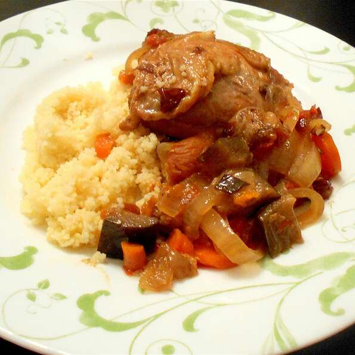

Chicken Tangen Recipe

Chickem Tangen
Description
This Moroccan slow cooker dish is the perfect blend of sweetness and spice.
Ingredients
- 2 tablespoons olive oil
- 8 skinless, boneless chicken thighs, cut into 1-inch pieces
- 1 eggplant, cut into 1 inch cubes
- 2 large onions, thinly sliced
- 4 large carrots, thinly sliced
- ½ cup dried cranberries
- ½ cup chopped dried apricots
- 2 cups chicken broth
- 2 tablespoons tomato paste
- 2 tablespoons lemon juice
- 2 tablespoons all-purpose flour
- 2 teaspoons garlic salt
- 1 ½ teaspoons ground cumin
- 1 ½ teaspoons ground ginger
- 1 teaspoon cinnamon
- ¾ teaspoon ground black pepper
- 1 cup water
- 1 cup couscous
Steps
- Heat olive oil in a skillet over medium-high heat.
Place the chicken pieces and eggplant in the heated oil;
stir and cook until the chicken is browned on all sides but not cooked through.
Remove the skillet from the heat.
- Place the browned chicken and eggplant on the bottom of a slow cooker.
Layer the onion, carrots, dried cranberries, and apricots over the chicken.
- Whisk together the chicken broth, tomato paste, lemon juice, flour, garlic salt,
, ginger, cinnamon, and ground black pepper in a bowl.
Pour the broth mixture into the slow cooker with the chicken and vegetables.
- Cook on High setting for 5 hours, or on Low setting for 8 hours.
- Bring water to boil in a saucepan. Stir in couscous, and remove from heat.
Cover, and let stand about 5 minutes, until liquid has been absorbed. Fluff with a fork.